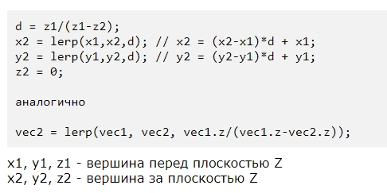
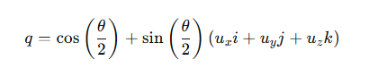

Загрузить архив с примерами ЗДЕСЬ.
В этом примере мы будем отсекать по передней плоскости треугольники.
Отсечение по передней плоскости просмотра осуществляется в пространстве вида, т.е. после умножения вершины на матрицу вида.
Почему необходимо выполнять отсечение по передней плоскости просмотра. После умножения вершин на матрицу вида, все что перед камерой (перед наблюдателем) имеет люс +Z. Все что сзади (за камерой) имеет отрицательное значение -Z.
Если камера на сцене неподвижна, или не наежает на модель - то отсечение по передней проскости просмотра выполнять не обязательно.
Модели и сцена состоят из треугольников.
К примеру у нас на сцене перед камерой размещен один треугольник - у треугольника все три вершины имеют +Z. Камера наежает на этот треугольник. После этого одна, две или все три вершины треугольника имеют -Z. Т.е.треугольник перестает быть треугольником, и не корректно рисуется на экране. И из за этого возникают искажения при растеризации такого треугольника, если не сделать отсечение по передней плоскости просмотра.
То есть после умножения очередной вершины модели на матрицу вида, мы проверяем, если у этой вершины -Z то надо сделать отсечение для треугольника. Что делает отсечение. Если все три вершины треугольника имеют -Z значит треугольник полностью находится за передней плоскостью просмотра, и такой треугольник разбивать не надо. Тругольник у которого у одна или две вершины имеют -Z мы разбиваем передней плоскостью просмотра. Если у треугольника одна вершина содержит -Z в результате разбивки мы получим 2 треугольника перед передней плоскостью - и эти 2 треугольника мы и заносим в массив для отрисовки для дальнейшего умножения на матрицу проекции. Если у треугольника две вершины содержат -Z то в результате разбивки мы получим один треугольник перед передней проскостью - этот треугольник перед передней проскостью отсечения мы заносим в массив для отрисовки и далее умножаем на матрицу проекции.
После запуска примера перемещатся по сцене можно с помощью клавиш W,S,A,D и поворачивать камеру мышей.

Код примера можно загрузить /src/03.004-camera_soft_near_plane1/Camera_Soft_Near_Plane1.
Плавное перемещение камеры в следующем примере. Код примера можно загрузить /src/03.004-camera_soft_near_plane1/Camera_Soft_Near_Plane1_Smooth.
В примере используется отсечение по передней плоскости просмотра. Оно осуществляется следующим способом:
Следующий код примера можно загрузить /src/03.004-camera_soft_near_plane1/Camera_Soft_Near_Plane2. Этот пример показывает все то же что и предыдущий, но добавлена функция Visible_ZClip() для отбрасывания задних поверхностей.
В примерах кода есть функция:
matrix4x4 CMeshManager::Matrix_Rotation_Axis(vector3 &VecIn, float Angle)
{
float x = VecIn.x;
float y = VecIn.y;
float z = VecIn.z;
float s = sin(Angle);
float c = cos(Angle);
float omc = 1.0f - c;
float xomc = x * omc;
float yomc = y * omc;
float zomc = z * omc;
float xxomc = x * xomc;
float xyomc = x * yomc;
float xzomc = x * zomc;
float yyomc = y * yomc;
float yzomc = y * zomc;
float zzomc = z * zomc;
float xs = x * s;
float ys = y * s;
float zs = z * s;
matrix4x4 MatRotate = matrix4x4 (xxomc + c, xyomc + zs, xzomc - ys, 0.0f,
xyomc - zs, yyomc + c, yzomc + xs, 0.0f,
xzomc + ys, yzomc - xs, zzomc + c, 0.0f,
0.0f ,0.0f, 0.0f, 1.0f);
return MatRotate;
}
Эта функция осуществляет поворот вокруг вектора на заданный угол. Функция создает матрицу вращения вокруг заданного вектора-оси, которую затем можно применить к любому объекту для поворота. Это метод основан на формуле Родрига (Rodrigues' rotation formula), которая позволяет вычислить матрицу вращения для заданной оси и угла.
Как работает эта функция:
Параметры
Тригонометрия
Формирование матрицы (Формула Родрига для матрицы вращения):
| xx(1-c)+c xy(1-c)-zs xz(1-c)+ys 0 |
| xy(1-c)+zs yy(1-c)+c yz(1-c)-xs 0 |
| xz(1-c)-ys yz(1-c)+xs zz(1-c)+c 0 |
| 0 0 0 1 |
Здесь:
Результат: Возвращаемая матрица MatRotate содержит вращение вокруг заданной оси на указанный угол.
Следующий пример /src/03.004-camera_soft_near_plane1/Camera_Soft_Near_Plane3 для поворота вокруг вектора использует не формулу Родрига, а кватернионы.
Видоизмененная функция вращения при помощи кватернионов выглядит так:
// Создание кватерниона из оси и угла
quaternion CMeshManager::Quaternion_From_Axis_Angle(vector3& axis, float angle)
{
vector3 normAxis = Vec3_Normalize(axis);
float halfAngle = angle / 2.0f;
float sinHalfAngle = sin(halfAngle);
quaternion q = {
cos(halfAngle),
normAxis.x * sinHalfAngle,
normAxis.y * sinHalfAngle,
normAxis.z * sinHalfAngle
};
return q;
}
// Преобразование кватерниона в матрицу
matrix4x4 CMeshManager::Matrix_From_Quaternion(quaternion& q)
{
float xx = q.x * q.x, yy = q.y * q.y, zz = q.z * q.z;
float xy = q.x * q.y, xz = q.x * q.z, yz = q.y * q.z;
float wx = q.w * q.x, wy = q.w * q.y, wz = q.w * q.z;
return matrix4x4(
1.0f - 2.0f * (yy + zz), 2.0f * (xy + wz), 2.0f * (xz - wy), 0.0f,
2.0f * (xy - wz), 1.0f - 2.0f * (xx + zz), 2.0f * (yz + wx), 0.0f,
2.0f * (xz + wy), 2.0f * (yz - wx), 1.0f - 2.0f * (xx + yy), 0.0f,
0.0f, 0.0f, 0.0f, 1.0f
);
}
matrix4x4 CMeshManager::Matrix_Rotation_Axis(vector3 &VecIn, float Angle)
{
// 1. Создаём кватернион из оси и угла
quaternion q = Quaternion_From_Axis_Angle(VecIn, Angle);
// 2. Конвертируем кватернион в матрицу вращения
matrix4x4 rotationMatrix = Matrix_From_Quaternion(q);
// 3. Возвращаем матрицу вращения
return rotationMatrix;
}
Как и в предыдущем примере функция принимает вектор и угол поворота. В теле функции сначала из вектора создается кватернион поворота на угол Quaternion_From_Axis_Angle(), потом из этого кватерниона создается матрица вращения Matrix_From_Quaternion() - эту матрицу мы возвращаем из функции и можем использовать для поворота объектов.
Теперь поговорим о теории кватернионов - что это такое.
Кватернион — это математическая структура, состоит из четырех компонентов.
struct quaternion
{
float w, x, y, z;
};
Как видим подобно вектору кватернион состоит из компонент x,y,z и есть четвертая компонента w.
Основные операции с кватернионами:
Применение кватернионов.
Для вращения объекта с помощью кватерниона, сначала по определенной формуле надо создать кватерниона вращения, далее из кватерниона вращения создать матрицу вращения, а потом можно вершины модели умножать на эту матрицу вращения.
Для вращения объекта в трёхмерном пространстве при помощи кватернионов используется формула:
p1 = qpq-1
p1 - кватернион, представляющий повернутую точку
q — единичный кватернион, задающий вращение
p — вектор, представляющий точку, которую нужно повернуть, записывается как чисто мнимый кватернион: p=0+xi+yj+zk
q−1 - обратный кватернион для q
Кватернион вращения создается по следующий формуле, угол вращения Phi и ось вращения ux, uy, uz:
Реализация в коде С++:
#include <math.h>
#define PI 3.1415926535897932384626433L
struct Quaternion
{
double w, x, y, z;
Quaternion operator*(const Quaternion& q) const
{
Quaternion q_out = {
w * q.w - x * q.x - y * q.y - z * q.z,
w * q.x + x * q.w + y * q.z - z * q.y,
w * q.y - x * q.z + y * q.w + z * q.x,
w * q.z + x * q.y - y * q.x + z * q.w
};
return q_out;
}
Quaternion conjugate() const
{
Quaternion q_out = {w, -x, -y, -z};
return q_out;
}
};
// Функция для создания матрицы вращения 4x4 из кватерниона
void createRotationMatrix4x4(const Quaternion& q, double matrix[4][4]) {
double xx = q.x * q.x, yy = q.y * q.y, zz = q.z * q.z;
double xy = q.x * q.y, xz = q.x * q.z, yz = q.y * q.z;
double wx = q.w * q.x, wy = q.w * q.y, wz = q.w * q.z;
matrix[0][0] = 1.0 - 2.0 * (yy + zz);
matrix[0][1] = 2.0 * (xy - wz);
matrix[0][2] = 2.0 * (xz + wy);
matrix[0][3] = 0.0;
matrix[1][0] = 2.0 * (xy + wz);
matrix[1][1] = 1.0 - 2.0 * (xx + zz);
matrix[1][2] = 2.0 * (yz - wx);
matrix[1][3] = 0.0;
matrix[2][0] = 2.0 * (xz - wy);
matrix[2][1] = 2.0 * (yz + wx);
matrix[2][2] = 1.0 - 2.0 * (xx + yy);
matrix[2][3] = 0.0;
matrix[3][0] = 0.0;
matrix[3][1] = 0.0;
matrix[3][2] = 0.0;
matrix[3][3] = 1.0;
}
int main()
{
// Угол и ось вращения
double theta = PI / 2; // 90 градусов
Quaternion q = {cos(theta / 2), 0, 0, sin(theta / 2)};
Quaternion p = {0, 1, 0, 0}; // Вектор (1, 0, 0)
Quaternion q_inv = q.conjugate();
// Вращение: p' = q * p * q^-1
Quaternion p_rotated = q * p * q_inv;
// Создание матрицы вращения 4x4
double rotationMatrix[4][4];
createRotationMatrix4x4(q, rotationMatrix);
return 0;
}
Следующий пример /src/03.004-camera_soft_near_plane1/Camera_Soft_Near_Plane4 для поворота вокруг вектора использует кватернионы - но без преобразования кватерниона в матрицу поворота.
Следующий пример /src/03.004-camera_soft_near_plane1/Camera_Soft_Near_Plane5 демонстрирует перемещение камеры влево- вправо, вверх- вниз, так же меняется позиция камеры по высоте - т.е. по сцене можно перемещаться без ограничений по высоте Y.